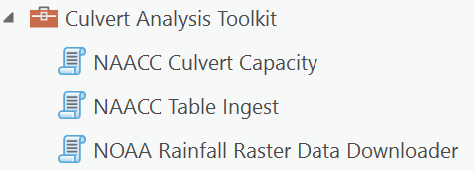

Toolbox
The Culvert Analysis Toolkit is currently implemented as ArcToolbox for use in ArcGIS Pro

Each tool in the toolbox contains built-in help text to explain tool functionality, inputs, and outputs. Summaries of tool usage follow.
NOAA Rainfall Raster Data Downloader
The NOAA Rainfall Raster Data Downloader does just that: it downloads rainfall rasters for your study area from NOAA's National Weather Service - Hydrometeorological Design Studies Center - Precipitation Frequency Data Server (PFDS).
By default, this tool acquires rainfall data for 24hr events for frequencies from 1 to 1000 years. All rasters are saved to a user-specified folder.
This tool creates a precipitation source configuration JSON file in the output folder. The JSON file is used as a required input to other tools—specifically those that calculate runoff/peak-flow.
Note that NOAA Atlas 14 precip values are in millimeters; the capacity calculator an other tools convert the values to cm on-the-fly.
NOAA rainfall rasters cover a large geographic area, so you may only need to use this tool occassionally.
NAACC Table Ingest
The NAACC Table Ingest tool will read in, validate, and extend a NAACC-compliant source table, saving the output as geodata (e.g., a file geodatabase feature class) for use in other culvert analysis tools, like the NAACC Culvert Capacity Calculator
NAACC Culvert Capacity
The NAACC Culvert Capacity tool measure the capacity of culverts to handle storm events using the TR-55 model. It does this by:
- calculating the capacity of the culvert(s) at a crossing
- calculating peak flow at the culvert over a hydrologically corrected digital elevation model for 24 hour storm events with frequencies of 1 to 1000 years
- comparing capacity of individual culverts and all culverts at a crossing to each peak-flow, and flagging the event at which the culverts and crossings exceed capacity.
Culvert location data must be NAACC schema-compliant.
Peak-Flow Calculator
(planned; currently implemented with the NAACC Culvert Capacity tool)
Calculate peak-flow for one or more points over a hydrologically corrected DEM. Points do not need comply with any predefined data model (such as NAACC).